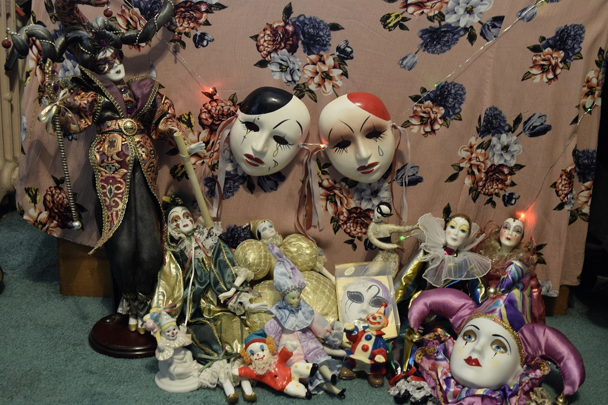

In addition to having an interest in clowns, I also happen to own some of my own! Below you will see them all together.
We've taken some individual glamour shots so you can get to know each clown a little better!


And I have say, its probably no suprise that I also like to clown around from time to time.